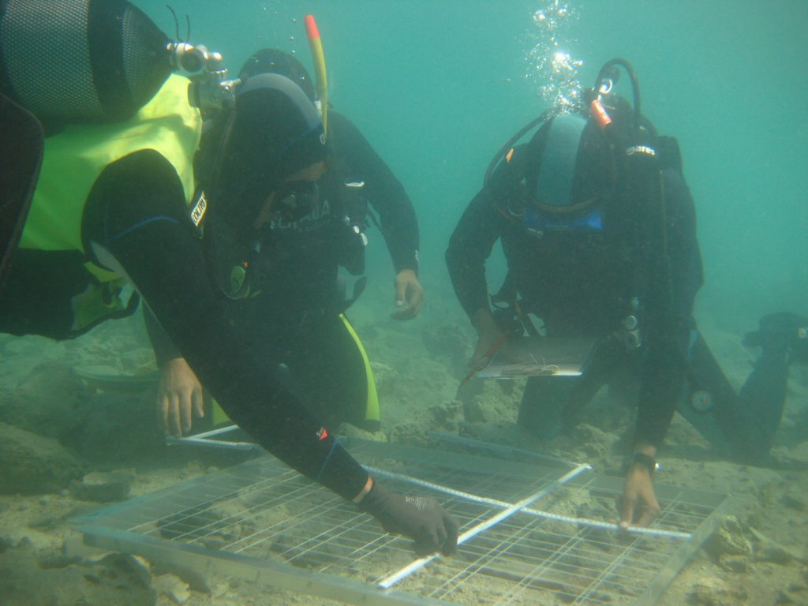

Dobrogea, regiunea cu cele mai multe vestigii arheologice din România îi fascinează atât pe turiștii români și străini, cât și pe cercetători. Cu orașele-port Histria, Tomis și Callatis, era o zonă importantă din punct de vedere comercial și economic în bazinul Mării Negre, din antichitate până în perioada medievală. Practic, în orice localitate din Dobrogea pot fi descoperite artefacte și urmele locuirii antice sau preistorice. Arheologia subacvatică, un domeniu relativ nou la noi în țară, poate oferi informații relevante, care să acopere anumite goluri din istoria noastră. Ce descoperiri fac cercetătorii care se scufundă în adâncurile mării pentru a găsi urme ale civilizației antice, a dezvăluit pentru Discover Dobrogea, Cătălin Dobrinescu, arheolog la Muzeul de Istorie Națională și Arheologie Constanța, atestat UNESCO pentru arheologie subacvatică.
Arheologia subacvatică, un domeniu prea puțin exploratPrimii pași în arheologia subacvatică s-au făcut în urmă cu 50 de ani. Arheologul Cătălin Dobrinescu a declarat pentru Discover Dobrogea, că totul a pornit de la Marina Militară. ”Comandorul Constantin Scarlat a fost primul care a încercat să găsească, să analizeze și să înregistreze artefactele submerse în zona portului de la Mangalia, a portului antic, în zona inundată a Callatisului. El a făcut în urmă cu jumătate de secol primele schițe, a adunat cele dintâi materiale submerse și a încercat să creeze chiar un birou de arheologie subacvatică. A fost mai greu în vremurile acelea, iar activitatea, nu știu din ce motiv, a fost întreruptă”, a afirmat Cătălin Dobrinescu.
Pasionat de istorie și implicit de arheologie, Cătălin Dobrinescu povestește că în 2016 s-a hotărât să înființeze, împreună cu colegii din Muzeul de Istorie Națională și Arheologie din Constanța un birou de arheologie subacvatică. ”Biroul are 6 specialiști în arheologie clasică și în preistorie și am început de atunci să pregătim oameni caresă învețe tainele scufundării, iar apoi să urmeze cursuri și să se atesteze în acest domeniu în centrul UNESCO din Croația. Până acum suntem 3 și este primul birou înființat oficial în România, dar era normal să existe la Constanța așa ceva. Din 2016 până în prezent avem cam 100 de kilometri pătrați scanați în Marea Neagră și am strâns date legate de vestigii, pe toată această suprafață. Este un prim pas. Practic, de la nimic, în trei ani am reușit să aflăm ceva legat de zona aceasta a mării, de la Vadu către Mangalia. Suprafețele sunt extrem de mici, dar este un pas înainte. Avem oameni pregătiți și o parte din echipamente”, a precizat pentru Discover Dobrogea, arheologul Cătălin Dobrinescu.